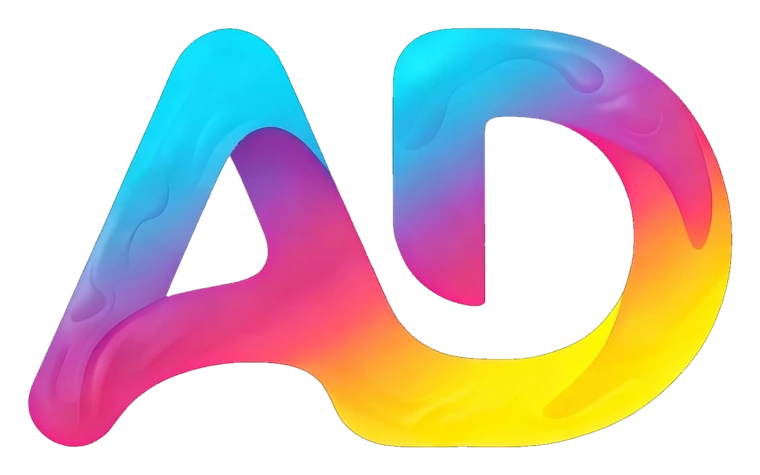
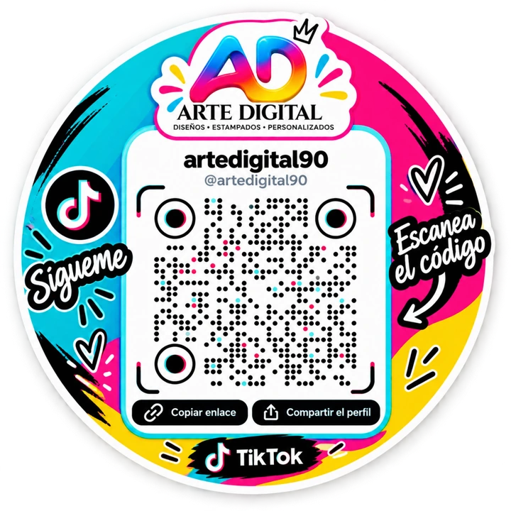

Tu marca, diseñada y estampada.
Creamos logos, diseños y estampados en ropa que hacen que tu idea se vea y se sienta única.
Pedir un presupuesto
Diseño y Stylo
Qué hacemos
Diseño de logos
Una identidad clara para tu negocio: logo, colores y tipografías listos para usar en todos lados.
Estampados en ropa
Remeras, buzos y gorras con tu diseño o el nuestro, en tiradas cortas o por encargo.
Diseño gráfico
Piezas para redes sociales, tarjetas, etiquetas y todo lo que tu marca necesite mostrar.
Productos personalizados
¿Tienes otra idea? Cuéntanos qué quieres crear y vemos cómo hacerlo realidad.
Sobre Nosotros
Misión
Transformar las ideas de cada cliente en diseños con personalidad: logos, estampados y piezas personalizadas que cuenten la historia de su marca y se vean increíbles, ya sea en una pantalla o sobre una prenda.
Visión
Ser el estudio de diseño y estampado de referencia para emprendedores y marcas, reconocido por su creatividad, su cercanía con el cliente y la calidad en cada trabajo.
Hablemos de tu proyecto
Cuéntanos qué necesitas y te respondemos con una propuesta. También puedes seguir nuestros trabajos y novedades en TikTok.
